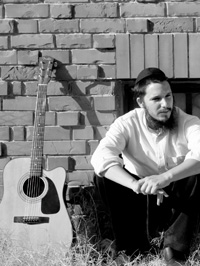

From Soul-Searching to the Soul-Stirring Music of the Alter Rebbe

TRUNCATED SPIRITUAL JOURNEY
Nadav grew up in a home that was not religiously observant. Judaism, to him, consisted of family meals on holidays, nothing more.
As a child, he displayed unusual musical talent, so his parents sent him to advanced music classes and private lessons. He was especially talented on the guitar and began participating in youth bands and national music competitions. During his school years, he spent seven years studying classical guitar and devoted most of his energy to his musical development. As he describes it, he felt an “intense lack of interest in school studies.”
“I practiced for hours and was a complete loner. For me, it was a time to broaden the soul, for thinking, straining upward in the exploration of various ideas, theories and ideologies. I had had a bris and bar mitzva, but there was no involvement with or significant mention of G-d in my life. Nevertheless, from the time I can remember, I always considered it possible that one day I would do t’shuva. The religious world was always alluring to me.”
At the age of eighteen, Nadav left home and moved to Tel Aviv. He skipped army duty and began attending the Rimon music school. His life was divided between work, studying, and hours of playing in clubs and at various venues. Today, he defines that time as a “period of rejecting values and disdaining the establishment,” and he sees this as a consequence of the permissive and liberal education he had in his youth.
Questions began to gnaw at him such as: What is the soul? Is there meaning to anything? Can one be truly happy? Is music alone the purpose of my life? During hours of practice, Nadav thought about these questions and wondered whether his happiness depended on a successful musical career or whether there was a deeper dimension to life. He decided to pack his bags and go on a trip to the Far East. His first stop was a silence retreat at an Indian ashram; it was meant to teach one how not to think.
“Now I understand that their approach is corrupt. In Chassidus it explains that thought is a garment of the soul. Therefore, you cannot stop thinking. You need to exchange a negative thought for a positive one, and through thought one should affect the soul. Through thought, you can reach very high spiritual planes, but you can never fight thoughts. Back then, I didn’t know the depths of Chassidus and those new ideas I discovered seemed revolutionary to me. After the retreat I was left with many thoughts and impressions, and I tried to make sense of everything I had seen and heard. My conclusion was that I had to invest more in spirituality.
“From there I continued to an isolated island in order to be with myself and my thoughts. I was sure that I was only at the beginning of my journey, but after a few days on the island, I was stung by a mosquito and contracted Dengue Fever. I was flown back to Eretz Yisroel and was hospitalized for a week in Tel HaShomer in Tzrifin. From there, I went back to Tel Aviv; my spiritual trip had been cut short.”
YOU MUST START KEEPING SHABBOS
“However short, my trip exposed me to spirituality. I began practicing meditation every morning on the beach. Something also opened up in me to Judaism. I realized I knew more about Eastern religions than about Moshe Rabbeinu.”
Several months passed and Nadav felt there was something he had yet to discover and that he couldn’t suffice with communing with nature and doing relaxation exercises on the beach. Despite his successful career and his many performances with top artists, he decided to head back to the Far East. This time though, he wanted to spend the Jewish holidays at Chabad houses throughout India. When he packed his bags, he even included t’fillin, a big kippa, a Tanach and a Siddur that he got in high school.
“I thought I could combine my interest in Far Eastern religions with my nascent interest in Judaism.”
He almost spent Rosh HaShana at the Chabad house in Manali, but missed the start of the big day thanks to a broken down bus that left him stranded at a hostel in the middle of nowhere. But he observed Yom Kippur for the first time in his life at the Chabad house in Dharamsala:
“Although I spent most of the time figuring out where they were up to in the pages of the Siddur they gave to me, after the prayers of the day I felt completely different. When I left, I resolved to return and visit again.
“In the meantime, I continued traveling and met an Indian ‘Baba,’ whom I joined in order to examine his spiritual life from up close. After spending several weeks with him, I saw that most of the things he preached about were not practiced in his own life. He would often get intoxicated. Everything made him angry. I saw that his life was far from the image portrayed by those who claim to be immersed in spirituality.
“One day, I went with a friend of that Baba to a river to do some foolish Indian religious ceremony. As the ceremony was progressing, I felt that something was not right. Suddenly, it all seemed very bizarre to me and empty of any real content. While contemplating this, I began turning around and did not notice a small piece of wood that was stuck in the ground and it pierced my foot. I was in such pain that I ran limping to the hut where I lived. I lay down with the pains shooting through my foot and felt very dizzy.
“I woke up in the middle of the night with a high fever and a pounding headache. I felt very weak and knew I had gotten an infection from the wood. I prayed to Hashem that I make it through the night.
“In the morning I mustered my last ounce of strength, took my belongings, and left. I went to an Indian doctor and found out that I had contracted malaria. This time, I did not return to Eretz Yisroel. I spent weeks in a guest house and had an Indian cook prepare food for me and care for me. Half the time I was delirious because of the Indian antibiotics I was taking.
“After several weeks, I had recovered and felt an urge to continue my traveling. I went to southern India, to Poona and Goa, but did not find the elusive peace of mind I was seeking. I constantly felt a tremendous emptiness and I tried to figure out what I was lacking. I suppressed any thoughts of the visit to the Chabad house on Yom Kippur and tried to find the answer in the magic that India offers. As a final step, after much traveling, I headed for Varansi, which is considered a stronghold of Indian impurity, in order to study music.
“After the exhausting 72 hour trip, I arrived in Varansi and the thought popped into my mind: I must keep Shabbos. It’s hard to explain where this thought came from. Maybe it happened specifically because this was an impure place that was full of idols. My Jewish spark had been ignited.
“I felt that until now I had tried to get in touch with my true self unsuccessfully, but now it was happening to me. I rented a private house for 1800 rupees a month (180 shekels/45 dollars) and bought a gas stove and pots and began cooking for myself and making a blessing on whatever I ate. I did not light a fire on Shabbos and did not play music. I would sing to myself and talk to G-d. I felt He exists, that everything is G-dliness, and that this world is under constant supervision and it all comes from Him. This was the end of Kislev, and I constructed a menorah out of mineral water bottle caps. I lit the menorah every night and sang all the Chanuka songs I knew.”
FINDING THE ANSWERS
“I lived that way for two months as I studied Jewish music and reconnected to Judaism. Most importantly, I was happy. I began to feel connected and keeping mitzvos gave me a sense of something real.
“My visa expired. I had to fly to Thailand to renew it. I took the opportunity to hop over to one of the distant islands that can be reached only by a small fishing boat. Unfortunately, while we were at sea, a storm kicked up and we were thrown about among the waves. The Thai sailors panicked and all the tourists began screaming. I began shouting the verse ‘Shma Yisroel’ which I knew by heart and held a T’fillas HaDerech card that I had with me, with all my might.
“After a few minutes of terror, the Thai sailors were able to approach the shore and they told us to toss our bags into the sea and start swimming towards the shore, which we did. After a long period of uncertainty, we arrived safely and our bags did too. I was stunned by the experience. I would lie in a hammock on the island and recite entire chapters of Tanach; I still held on to the T’fillas HaDerech card that I felt had saved my life.
“On the island I met other Israelis who had come seeking a spiritual experience, including those who had left prestigious positions in order to do yoga all day on the beach. I was very confused and wanted to speak with a rabbi.
“I traveled to Bangkok, though not before undergoing another two-week silence retreat. I was happy to discover that there would be a four-day seminar at the Chabad house, given by Rabbi Yechezkel Sofer. I very much wanted to get involved in Judaism but did not know anything about it. I didn’t even know that t’fillin are put on every day, or that there are three t’fillos a day, or what the Mishna and Gemara are. All these words and concepts were foreign to me. I was sure G-d exists but other than that, I knew nothing.
“At the seminar, the rabbi said that the starting point is whether you believe the Torah was given at Sinai. If you believe that, then it’s all true. I believed. I knew it was just a matter of time before I would become religiously observant in my daily life. That Pesach I did not eat bread but in my ignorance, I ate spaghetti instead. I had no idea this was a problem.
“After Pesach I returned to India and Dharamsala. The Chabad house was just starting a course in Kabbala and meditation with the shliach Rabbi Dror Shaul. I was happy to finally be able to find out what Judaism is and what it has to offer. I discovered that all the answers to spiritual questions are found in Judaism in a much deeper way.
“I found the answer to the central question, namely how to be ‘enlightened,’ in Tanya. I was amazed and after the course on meditation I decided to stay at the Chabad house to get accustomed to praying three times a day. I struggled with my inclination that found it easy to meditate for an hour but to sit with tallis and t’fillin and daven was difficult.”
I FELT THAT THE ALTER REBBE WAS SPEAKING TO ME
“It was all new to me and I experienced many internal struggles in gaining an understanding of Judaism. I found the answers in Chassidus. My encounter with Chassidus was powerful and won my heart. The high point was when I learned the maamer in Likkutei Torah on Parshas Shlach, in which the Alter Rebbe explains the sin of the spies in spiritual terms. I understood that the spies wanted to preserve the spiritual awareness they had acquired in the desert, but they sinned because they did not believe that one can combine the material and the spiritual while maintaining the same, high spiritual awareness. I learned about the significance of mitzvos and the drawing down of the Sh’china to earth and discovered the secret within Judaism – the combining of opposites, the material and the spiritual, here below.
“This was the answer to all my questions, in a nutshell. I felt that the Alter Rebbe was speaking directly to me. I was astounded that someone had dealt deeply with the questions that had bothered me for the longest time. On the one hand, the Eastern religions champion distancing oneself absolutely from the material and being completely devoted to the spiritual. On the other hand, the Western philosophies maintain that the more you satisfy your desires, the more you actualize yourself. I felt stuck between the two approaches until I read that the Alter Rebbe addresses this and provides the answers. The answer is that the purpose of creation is ‘Hashem desired a dwelling for Himself down below.’ Hashem wants to be revealed down in this material world. The whole point is to sanctify the material and infuse holiness and G-dliness into this world which conceals the light of the Sh’china.
“I moved into the Chabad house for a period of study. Rabbi Shaul began talking to me about returning to Eretz Yisroel and learning in a yeshiva, but this sounded farfetched to me. I wanted to go home and learn more about Judaism, but in my own way. I was afraid to commit. I returned home and began searching for a new path as the impact of my encounter with Judaism in India began to fade from my life. I was simply afraid of the truth that was Chassidus.”
GOING TO YESHIVA
“It was wonderful, a few months later, when Rabbi Dror Shaul called and told me he was in Eretz Yisroel. He invited me for Shabbos and I figured, why not?
“I went to Rechovos to spend Shabbos with him. After Shabbos, he showed me a video of myself, taken half a year earlier in India, in which I spoke about the joy I found in Judaism. I watched it and asked myself, where am I now? Why didn’t I pursue this when I know it’s the truth?
“I kept thinking about this and finally decided that I was going to choose, of my own free will, to live a religious life. I felt that G-d had arranged things so that I could make a conscious choice, far from the initial excitement I had in India. I decided it was time I went to yeshiva.
“I went to the Chabad yeshiva in Ramat Aviv and thought I was renouncing my old life, including music. After spending some time in yeshiva, I realized there was no reason for me to stop playing; on the contrary, Hashem gives every person gifts and talents with which to serve Him and fulfill his shlichus in this world.
“After all the traveling I had done and experiences I had, learning Chassidus was the only place that quieted my soul. It’s not an intellectual space but a deeply felt space in the soul. What all the meditation and searching in India had failed to accomplish, learning and doing mitzvos accomplished.
“I spent three years in yeshiva, studying the Alter Rebbe’s teachings. I felt closure since it was a maamer of the Alter Rebbe that had brought me back home, to Judaism, and to myself. This connection-building was a process that extended over a period of time in which I learned and delved into Chassidus in order to satisfy the enormous thirst I had.
“I felt that the treasure which is the Tanya must reach everyone, and when we held Shabbat evening services for students from Ramat Aviv I would photocopy entire chapters and distribute them. You feel the power of Tanya immediately, but it takes inner work for it to begin to speak to you, so that it moves your soul.”
THREE ALBUMS OF CHABAD NIGGUNIM
Today, Rabbi Nadav Becher is working on a number of projects whose purpose is to bring Chassidic niggunim to the broader public. He is the director of two music groups, A Groise Metzia which performs original compositions and the Peshita band that performs at Chassidic weddings.
Since he became a Chabad Chassid, he produced three CD’s of Chabad niggunim. The last one was done with musician, Oren Tzor.
He is particular about retaining the original Chassidic tune and not dropping a note. “I don’t understand why, when singing at farbrengens, people sing a niggun for five minutes and then move on to something else. You can sing a niggun for forty minutes without growing tired, but you have to sing it properly.”
As for the niggunim of the Alter Rebbe:
“There is some special quality about anything associated with the Alter Rebbe that affects one very deeply. You sense a powerful truth. There is no other way to explain it other than truth. When you sing or play the Alter Rebbe’s niggunim, you really feel that you want to be somewhere else, much cleaner, simpler, purer. A niggun of the Alter Rebbe connects you with your core inner space – demanding of you that you be true and pure.”
See issue 779 for an interview with musicians Nadav Becher and Oren Tzor about their music.
Sholom Ber Crombie. "From Soul-Searching to the Soul-Stirring Music of the Alter Rebbe." Beis Moshiach, no. 825 (February 29, 2012).